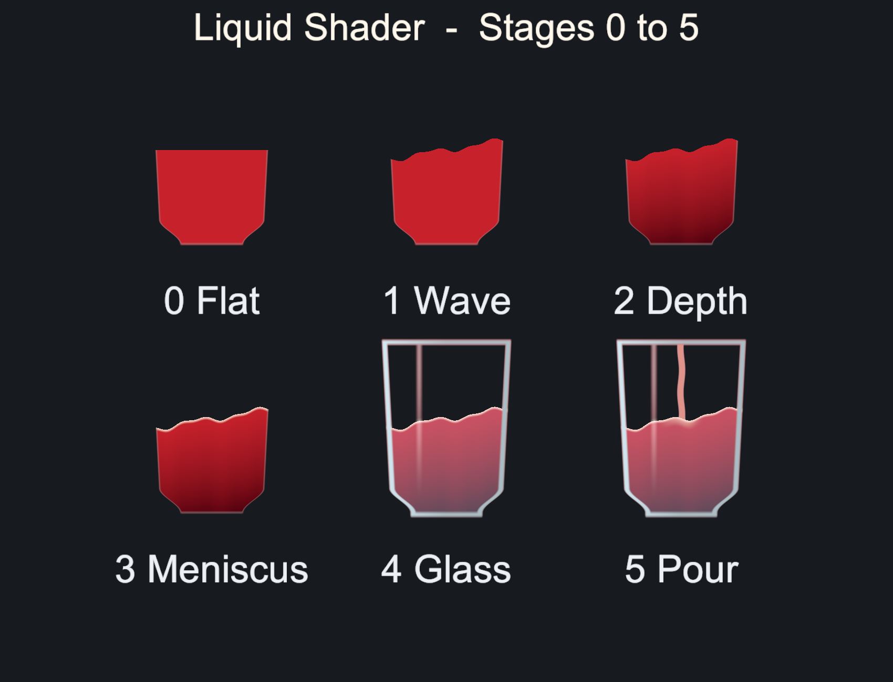
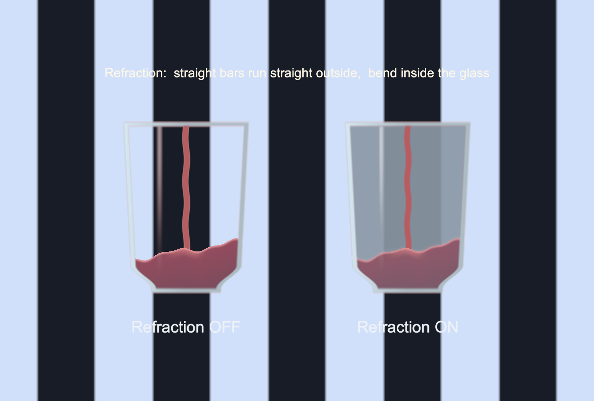
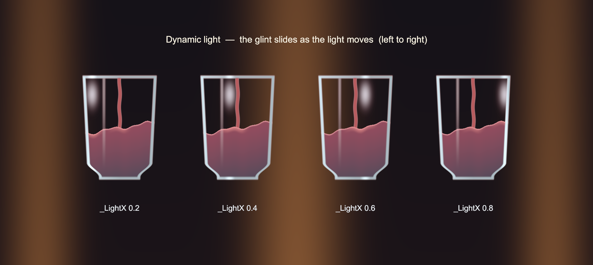
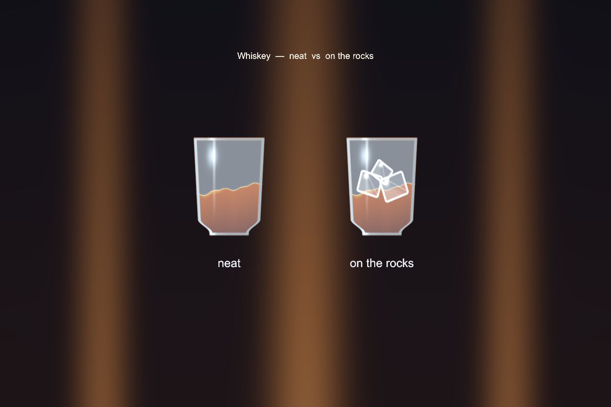
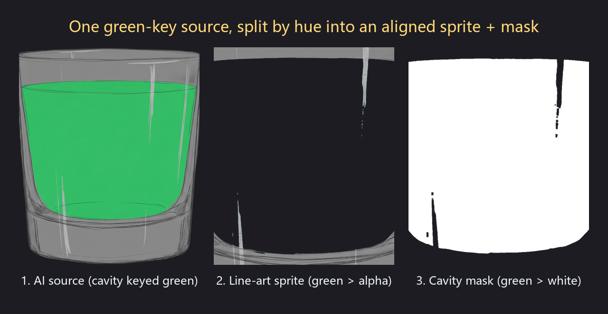
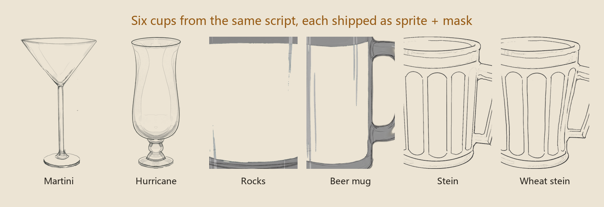

Personal Project · Unity · Tech Art / Technical Design个人项目 · Unity · 技术美术 / 技术设计
Kitchen Bar厨房调酒 — liquid & glass rendering
Unity 6 · URP · Procedural Rendering · Custom GrabPass Shader · SpriteMask
A 2D cocktail-pouring game. My job was the liquid, the glass, and the cups, and the hard part was that every first version looked fake. The goal was never physical accuracy — it was a real-time, controllable, believable glass of liquid. This write-up borrows the classic stylized-water decomposition — surface, refraction, lighting, foam, buoyancy — and transposes it into a 2D glass. Each chapter follows the same arc: what looked wrong, why it actually read as wrong, and the fix that worked. Key code included. 一个 2D 倒酒游戏。液体、玻璃、酒杯的渲染是我做的，麻烦在于每个东西的第一版都很假。目标从来不是物理正确，而是一杯实时、可控、看起来可信的酒。这篇拆解借用了程式化水体渲染的经典配方——液面、折射、光照、泡沫、浮力——把它移植进 2D 场景里的一只杯子。每章讲的都是同一个过程：哪里假、查出来为什么假、最后怎么改对的。附关键代码。

Liquid-shader lab: refraction, color presets, and a layered pour — all procedural.液体 shader 实验场：折射、配色预设、分层倒酒——全程序化。
The recipe — six ingredients配方——六个成分
Stylized water shaders classically build up in layers: depth color, refraction, foam, lighting, waves, buoyancy. A glass of cocktail needs the same ingredient list, just translated to 2D — plus one ingredient water never needs: the container. Click a card to jump to its chapter.
程式化水体 shader 的经典做法是分层叠加：深度着色、折射、泡沫、光照、波浪、浮力。一杯酒需要同一份成分清单，只是要翻译成 2D 的做法——外加一个水永远不需要的成分：杯子本身。点卡片直接跳到对应章节。
1 · Surface — killing the "conveyor belt"第 1 章 · 液面——去「传送带感」
In a water shader this ingredient is called waves, and the tutorial move is to scroll a wave texture across the surface. That's exactly what my first liquid surface did — a sine-wave texture panning sideways — and the eye instantly read it as a conveyor belt. Layering a second counter-scrolling wave helped a little, but it was still wrong. Eventually I realized the problem wasn't the wave shape or the speed: any surface that translates as a whole looks fake. I replaced it with a slightly top-down elliptical "disc" carrying a meniscus highlight; clipped to the cup wall, that highlight reads as liquid curling up the glass. It mostly sits still and only "breathes", and the motion of a pour is handed off to ripples at the impact point.
这个成分在水体 shader 里叫「波浪」，教程标配做法是让波形贴图在表面上滚动。我的第一版液面就是这么做的——一张正弦波贴图横向滚动——眼睛立刻读成「传送带波纹」。加第二层反向滚动做干涉，好一点，但还是不对。后来想明白了，问题不在波形也不在速度：只要表面整体在平移就假。改成一张略俯视的椭圆「水盘」，带一圈弯月面亮边；被杯腔遮罩裁切后，这圈亮边正好落在液体贴杯壁的位置，看起来就是液面沿着杯壁微微上翘。平时几乎不动，只轻轻「呼吸」，倒酒的动感交给落点的涟漪去做。

Stages 0–5. Compare 1 Wave (the rejected scrolling look) with 3 Meniscus (the final ellipse).0–5 阶段。对比 1 Wave（被弃的滚动做法）与 3 Meniscus（最终椭圆方案）。
Key code — baking the meniscus ellipse (C#)关键代码 — 烘焙弯月面椭圆贴图（C#）
// Surface = a slightly top-down elliptical "disc": center fill + meniscus rim highlight. float r2 = nx*nx + ny*ny; // squared radial distance in ellipse space float fill = SmoothStep(1f, 0.86f, r2); // the disc body float men = SmoothStep(0.62f, 0.97f, r2) // meniscus: appears near the rim... * SmoothStep(1.04f, 0.95f, r2); // ...and fades out at the very edge float lum = 0.82f + ny*0.16f + men*0.55f; // back edge brighter + rim highlight // At runtime the disc only "breathes" (tiny scale pulse) — it never translates. float ellH = Clamp(cupW*0.18f, .12f, .26f) * (1f + 0.06f*Sin(t*1.7f));
Takeaway — For realism, never translate the whole surface; use in-place undulation and a perspective shape.经验 — 要真，就别让液面整体平移，用原地起伏／透视形状。
2 · Refraction — a GrabPass shader第 2 章 · 折射——GrabPass shader
Without refraction the liquid looked pasted onto the glass, like two flat stickers instead of a container with something inside. Water shaders solve this by sampling the scene behind the surface with distorted UVs; a 2D glass can use the same trick with a simpler distortion source. I wrote a shader, Bartender/GlassRefract. It grabs the already-rendered backdrop with a GrabPass, then offsets the sampled UVs by how far each pixel sits from the cup's centerline: near the wall the offset grows, which is exactly what refraction magnification does. The cup cavity is clipped inside the shader via a mask texture, so the whole thing is self-contained and skips the SpriteMask/stencil ordering traps entirely. A render-pipeline guard makes it shut off silently under URP instead of erroring.
没有折射的时候，酒体看着就是「贴」在玻璃上的一张色块，两张平面图叠一起，不像装着酒的杯子。水体 shader 的解法是用扭曲过的 UV 去采样水面背后的画面；2D 的杯子可以用同一招，只是扭曲源可以更简单。我写了个 shader，Bartender/GlassRefract：用 GrabPass 抓背后已经渲染好的画面，按像素到杯壁中心的水平距离做横向 UV 位移，越靠杯壁位移越大，这正好就是折射放大。杯腔形状用遮罩贴图在 shader 里直接 clip 掉，整个自包含，SpriteMask/stencil 那套渲染顺序的坑全绕开了。另外加了管线守卫，切到 URP 就安静关掉，不报错。

Striped backdrop as a ruler: bars stay straight outside, but bend & magnify inside the glass once refraction is on.竖条当标尺：杯外笔直，开折射后杯内被掰弯、放大。
Key code — the fragment shader (Bartender/GlassRefract, HLSL)关键代码 — 片元着色器（Bartender/GlassRefract，HLSL）
GrabPass { "_GlassGrab" } // grab everything already rendered behind
fixed4 frag(v2f i) : SV_Target
{
fixed mask = tex2D(_MaskTex, i.uv).a; // cup cavity = 1
clip(mask - 0.5); // discard outside — no SpriteMask/stencil needed
float ex = (i.uv.x - 0.5) * 2.0; // -1 (left wall) .. 1 (right wall)
float disp = pow(abs(ex), _EdgePow) * sign(ex) * _Strength; // grows toward the wall
float2 guv = i.grabUV.xy / i.grabUV.w;
guv.x -= disp; // lateral shift = refraction magnification
return tex2D(_GlassGrab, guv);
}
Takeaway — A glass's realism isn't in the glass — it's in how it bends what's behind it.经验 — 玻璃的「真」不在杯子本身，在它如何扭曲背后的东西。
3 · Lighting — a Light2D arc on the glass第 3 章 · 光照——Light2D 玻璃弧光
On water, lighting means a specular glint dancing on the surface; on a glass, it's a bright arc hugging the rim. After migrating to URP I added a Light2D to produce that arc, and it lit every sprite in the scene. All my hand-tuned colors drifted at once. Root cause: URP 2D sprites default to Sprite-Lit-Default, so everything "eats light". Fix: Unlit base + Lit overlay. The base is pinned to Unlit so its color is immune; a single Lit glass layer sits on top, transparent inside with alpha only on a wall-hugging band plus side-facing normals. Light sweeps that band into one arc along the rim instead of smothering the content in a milky film.
在水面上，光照是浮动的镜面高光；在杯子上，是贴着杯壁的一道弧光。迁到 URP 后加一盏 Light2D 想打出这道弧光，结果全场精灵都被照、精调的本色全漂了。根因：URP 2D 精灵默认是 Sprite-Lit-Default，都「吃光」。修法：Unlit 底 + Lit 叠层。底层钉死 Unlit、本色免疫；最上叠一层 Lit 玻璃，内部全透明、只在贴杯壁窄带给 alpha + 侧向法线，于是光只扫出沿杯壁的一道弧光，而不糊一层白纱。

As the key light moves, only the wall-band glint slides — the liquid color underneath never shifts.主光移动时，只有杯壁窄带的高光在滑动，下面的酒色全程不变。
Key code — Unlit base, Lit overlay (C#)关键代码 — Unlit 底 + Lit 叠层（C#）
// URP 2D sprites default to Sprite-Lit-Default — add one Light2D and EVERYTHING eats light. // So every base sprite is pinned to Unlit: hand-tuned colors become immune to lighting. unlitMat = new Material(Shader.Find("Universal Render Pipeline/2D/Sprite-Unlit-Default")); litMat = new Material(Shader.Find("Universal Render Pipeline/2D/Sprite-Lit-Default")); sr.sharedMaterial = unlitMat; // ← applied to ALL base sprites at creation // Only ONE overlay is Lit: transparent inside, alpha only on a wall-hugging band, // with side-facing normals imported as the sprite's secondary "_NormalMap" texture. glassLit.sharedMaterial = litMat; // side light sweeps this band into an arc
Takeaway — The overlay should make the rim catch light as an arc, not smother content in a half-opaque film.经验 — 叠层要的是「杯壁吃光出弧光」，不是「整片半透膜糊住内容」。
4 · Foam — when style beats simulation第 4 章 · 泡沫——风格赢了模拟
Foam is a headline ingredient of every water shader — usually a noise texture panned over the surface with distorted UVs. I tried the equivalent here and failed five times in a row: each procedural version was mathematically fine and visually wrong. The eventual diagnosis wasn't in the math at all. The game is drawn in a pencil-sketch style, and clean procedural froth simply doesn't belong in that world — it looked like a screenshot from a different game pasted on top. Foam became a hand-painted texture that matches the line work, and it fit instantly. Along the way I also discovered a humbling bug: for several tuning rounds the foam had never rendered at all, so every parameter change I "evaluated" had changed nothing.
泡沫是所有水体 shader 的招牌成分——通常是一张噪声贴图，用扭曲 UV 在表面上滚动采样。我在这儿做了等价的尝试，连败五版：每一版程序化泡沫在数学上都对，看起来都不对。最后的诊断根本不在数学上：这个游戏是铅笔速写风，干净的程序化泡沫放不进这个世界——像从另一个游戏截图里抠下来贴上去的。改成跟线稿风格一致的手绘贴图，立刻就融进去了。中间还查出一个很打脸的 bug：有好几轮调参期间泡沫压根从没被渲染出来过，我认真「评估」过的每次改动其实全打在空气上。
Takeaway — Match the art style before matching the physics — and before tuning anything, verify it actually renders.经验 — 先对齐美术风格，再谈物理正确；调参之前，先确认那个东西真的被画出来了。
5 · Buoyancy — ice displacement, one EffLevel第 5 章 · 浮力——加冰排水 EffLevel
Water shader write-ups end with buoyancy: making objects ride the surface. In a glass, the floating object is ice — and here buoyancy drags gameplay into the rendering. Adding ice raises the surface. But if only the visual rises while scoring still reads poured volume, the visible surface floats above the judged line. The player aims at one line and gets judged on another, which is fatal for a "hit the target line" game. Fix: a single EffLevel = poured level + ice displacement drives the visuals, the target-line check, spill, and scoring all at once. It also produces a nice bit of design for free: with ice in the glass, you pour a little less, same as a real bar.
水体 shader 教程的最后一章通常是浮力：让物体浮在水面上。在杯子里，浮着的东西是冰——而且这里的「浮力」会把玩法一起卷进渲染。加冰会顶高液面。但如果只抬「视觉」、评分还按实际倒进去的量算，玩家瞄的那条液面就浮在判定线上方，卡准了也判失败，对「卡目标线」这个玩法是致命的。修法是引入一个 EffLevel = 已倒液面 + 冰排开量，视觉、对目标线、溢出、评分全部只认这一个数。顺便还白捡了一层设计：杯里有冰就得少倒点酒，跟真调酒一样。

Whiskey, neat vs on the rocks: ice raises the surface, and both cups feed one judged level.威士忌 neat vs on the rocks：冰把液面排高，两杯都走同一套判定。
Key code — one value drives everything (C#, from BartenderGame.cs)关键代码 — 一个量驱动一切（C#，摘自 BartenderGame.cs）
// Ice displacement: each cube raises the "effective surface" by iceDisplace. float IceRiseFrac => (level > 0.02f) ? Mathf.Min(iceAdded, iceMax) * iceDisplace : 0f; float EffLevel => Mathf.Clamp01(level + IceRiseFrac); // ...and every consumer reads the SAME value: float lh = EffLevel * liqH; // ① visible liquid height if (EffLevel > spillLine) { Spill(); return; } // ② spill check (over the rim) var r = Evaluate(EffLevel, target, garnishOk); // ③ scoring — aim == verdict
Takeaway — If a physical detail affects visible state, visuals and judgment must read the same value — what you aim at is what's judged.经验 — 物理细节若影响可见状态，必须让视觉与判定走同一个量——「你瞄的」就是「被判的」。
6 · The container — a cup-art pipeline第 6 章 · 容器——杯子美术管线
The one ingredient with no water-shader analog: water doesn't come in a cup, a cocktail does. The game keeps adding cups: tumblers, stemware, handled steins, even pencil sketches shot on a phone. The renderer needs an aligned sprite + cavity-mask pair for each one, and cutting those by hand is slow and never lines up. So I built an idempotent pipeline. Green-key sources split by hue into an aligned sprite (green → transparent) and mask (green → white): the Y-crop runs on the green region to drop a stem, while the X-axis keeps a handle because the handle isn't green and the mask excludes it for free. A second PIL path turns raw white-background sketches into geometry-fitted masks. The iron rule: trim to the content box, or the cup floats above the counter once it's scaled.
这是唯一在水体 shader 里找不到对应物的成分：水不需要装进杯子，鸡尾酒需要。游戏的杯子一直在加：直身杯、高脚杯、带把手的扎啤杯，还有微信里发来的手绘草图照片。渲染端每个杯子都要一对对齐的线稿 sprite + 内腔 mask，手抠又慢又对不齐，所以做了一条幂等管线。绿键源图按色相拆成对齐的 sprite（绿→透明）和 mask（绿→白）：Y 轴按绿区裁，自动切掉高脚杯的杆；X 轴保留把手，把手不填绿，遮罩天然就把它排除了。白底手绘草图走另一条 PIL 路径，自动拟合出几何遮罩。有条铁律：必须按内容包围盒贴紧裁剪，杯底下面留一条透明边，放大之后杯子就浮在台面上方。

One source → aligned sprite + mask, split by hue.一张源图 → 对齐的 sprite + mask，按色相拆分。
Key code — the hue key & the split (C#, from SetupCupB.cs)关键代码 — 色相判定与拆分（C#，摘自 SetupCupB.cs）
// "Is this pixel the green cavity?" — tolerant of AI-art color noise. static bool IsGreen(Color32 c) => c.a > 60 && c.g > 100 && c.g > c.r + 25 && c.g > c.b + 25; // MASK: keep only green pixels that stay green when eroded 3px in 8 directions // → the fill region sits safely inside the cup wall. maskPx[i] = eroded ? new Color32(255,255,255,255) : new Color32(0,0,0,0); // SPRITE: green → transparent; everything else kept (and green spill desaturated). if (green[i] || c.a < 60) glassPx[i] = new Color32(0,0,0,0); else { byte g = (byte)Mathf.Min(c.g, Mathf.Max(c.r, c.b)); glassPx[i] = new Color32(c.r, g, c.b, c.a); }

Cups from the same script: tumblers, stemware, handled steins — all bottom-aligned to the counter.同一套脚本产出的杯子：直身杯、高脚杯、带把手扎啤杯，全部贴台对齐。
Takeaway — Tooling beats one-off art — an idempotent split/crop script lets any new cup enter the game in minutes.经验 — 做工具比做单图更值钱——一套幂等的拆图／裁切脚本，让任意新杯子分钟级入库。
Also explored其他探索
A few more that didn't get a full chapter. Ice kept turning orange; after ruling out materials, lights and sorting order, the culprit was URP Bloom bleeding the drink's amber glow onto the cubes. There's also layered cocktails (per-band colors revealed as you pour — the 2D cousin of depth-based water color) and a cold-mist particle system for iced drinks.
还有几件没写成完整章节的。冰块发橙：材质、灯光、排序挨个排除，最后发现是 URP Bloom 把酒体的琥珀辉光渗到了冰上。另外做了分层鸡尾酒（倒酒时逐层露出色带——算是水体「深度着色」在 2D 里的远亲）和冰饮的冷雾粒子。
Conclusion结语
Line the six chapters up and the recipe is the classic stylized-water list — surface, refraction, lighting, foam, buoyancy — plus the container that water never needs. But none of these ingredients was added because a tutorial listed it. Each one earned its slot by fixing one specific way the drink read as fake: a surface that translated, a liquid pasted on the glass, a light that washed everything, foam from the wrong game, a judged line the player couldn't see. That's what "believable" means in stylized rendering: not accuracy, but removing the reads-as-wrong signals one at a time.
把六章排成一行，正好就是程式化水体的经典配方——液面、折射、光照、泡沫、浮力——再加上水永远不需要的容器。但没有一个成分是因为「教程里有」才加的：每个成分都是靠修掉一种具体的「假」挣来位置的——整体平移的液面、贴在玻璃上的酒体、把全场洗白的灯、来自另一个游戏的泡沫、玩家看不见的判定线。这就是程式化渲染里「可信」的含义：不是物理正确，而是把「读起来不对」的信号一个一个拆掉。
Further reading延伸阅读
This write-up borrows its structure from the classic 3D water breakdown: Alexander Ameye — Stylized Water Shader ↗ builds up water in the same layers (depth, colors, refraction, foam, lighting, waves, buoyancy) for a 3D URP scene, and is the best single reference for the original recipe.
本文的章节结构借自 3D 水体渲染的经典拆解：Alexander Ameye — Stylized Water Shader ↗ 用同一套分层（深度、着色、折射、泡沫、光照、波浪、浮力）在 3D URP 场景里一步步搭出水面，是原版配方最好的单篇参考。
Personal project · in active development. Code walkthrough available on request.个人项目 · 开发中。可应邀做代码走读。